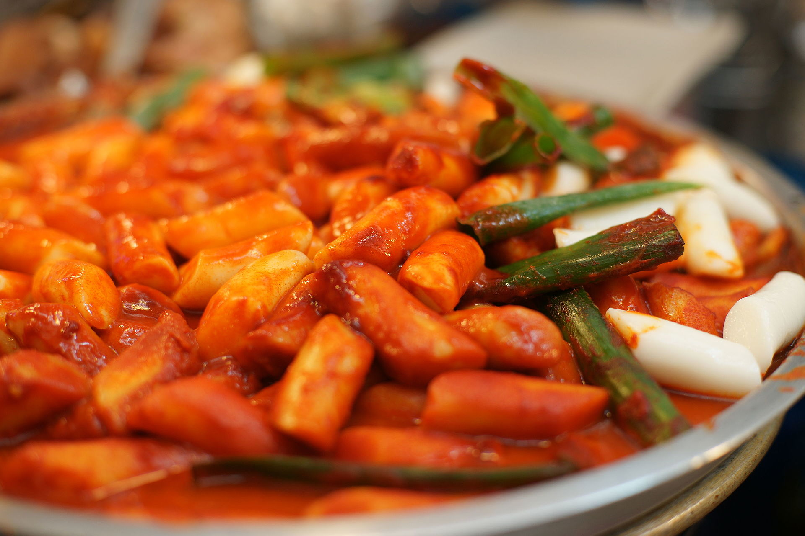
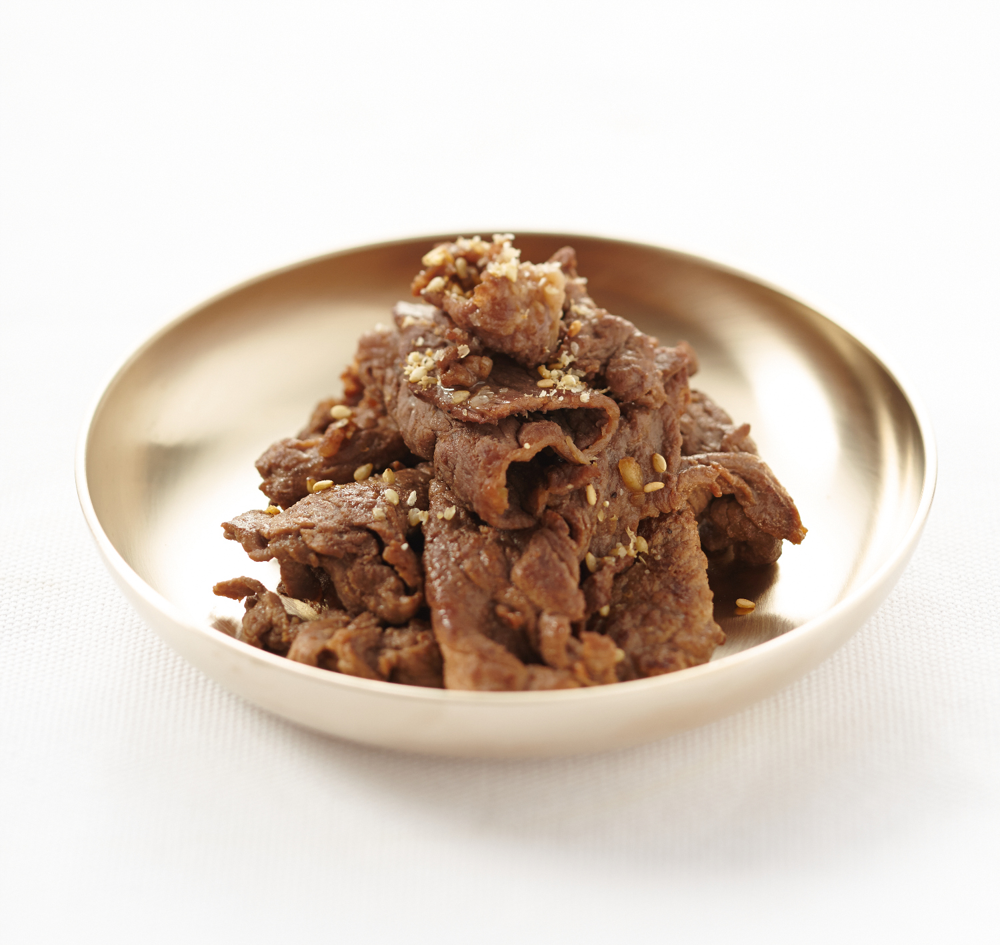
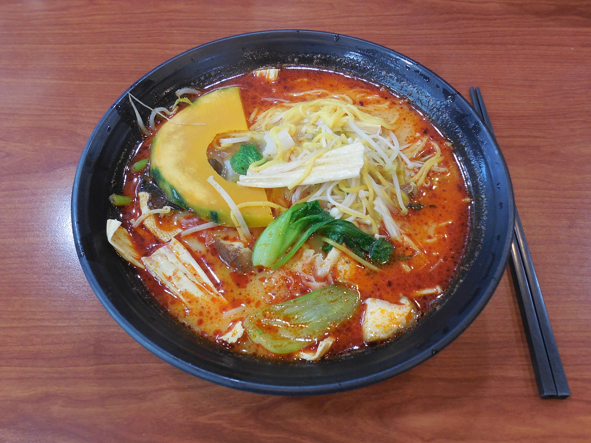
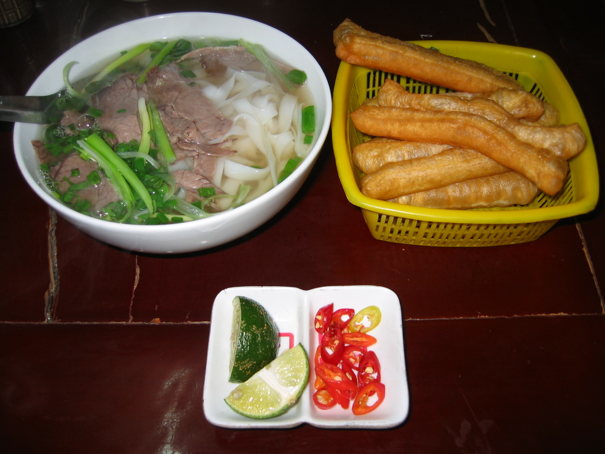

🍀 My Favorite Top 5's 🍀
MOVIES
: I enjoy movies that reflect on life and remind me of everyday happiness.
The following films give me that comforting feeling.
SONGS
: I appreciate Taylor Swift’s unique cheerfulness, but I also cherish her lyrics that offer comfort and reassurance.
The following songs particularly showcase her special qualities.
FOOD
: Click the photos to get some info! 🤤
- Korean Food

- - Tteokbokki
I enjoy the perfect balance of spiciness and sweetness in tteokbokki.

- - Bulgogi
The sweet meat and smoky flavor pair perfectly with rice and kimchi.
- Japanese Food

- - Sushi
I love the fresh taste of sashimi and the aroma of wasabi.
- Chinese Food

- - Malatang
It's really delicious to blanch various vegetables in a spicy broth.
- Vietnamese Food

- - PHO
The rich meat broth and rice noodles are easy to digest and very satisfying.